Перевірка статистичних гіпотез
Прикладна аналітика при розробці IT
Ігор Мірошниченко
КНУ імені Тараса Шевченка, ФІТ
Як перевіряються гіпотези?
Для перевірки гіпотез використовуються параметричні та непараметричні критерії
Як обрати статистичний критерій для перевірки гіпотез?
- Для спростування/підтвердження гіпотез використовуються статистичні критерії.
- Вибір статистичного критерію завжди залежить від сформульованої гіпотези
- Наприклад, для порівняння середніх використовується один клас критеріїв, для перевірки форм розподілу — інший
Нульова гіпотеза
Нульова гіпотеза — прийняте припущення про те, що не існує зв’язку між спостереженнями у двох (або більше) подіях (вибірках, феноменах, сукупностях).
Гіпотезу відкидають, якщо дані показують різницю між вибірками (на заданому рівні значущості)
\[ H_0: \mu_1 = \mu_2 \\ H_1: \mu_1 \neq \mu_2 \]
\(H_0\) означає, що середні (якщо це, наприклад, \(t\)-критерій) не відрізняються між двома вибірками, а, відповідно, що ця умова не виконується. Для цього експерименту позитивним результатом є відкидання нульової гіпотези.
Відкинути ми її можемо за умови заданої допустимості помилки першого роду (p-value), тобто щоб помилка була меншою за 0.05, якщо нам достатньо 95% рівня значущості
Параметричні критерії
Параметричні критерії засновані на тому, що відомий розподіл даних. Їх можна використовувати, коли головне припущення критерію дотримується, а саме те, що тип розподілу - відомий.
У цієї метрики може бути такий розподіл
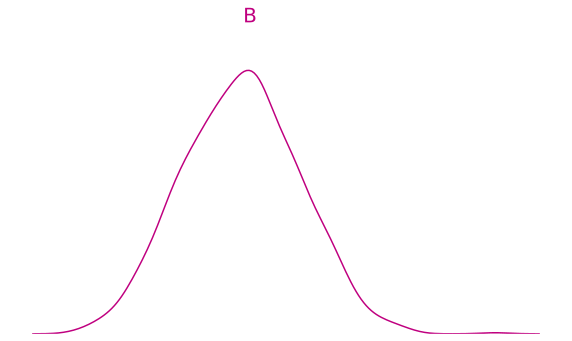Відповідно, розподіл тієї самої метрики має мати схожу форму. Як нам їх порівняти?
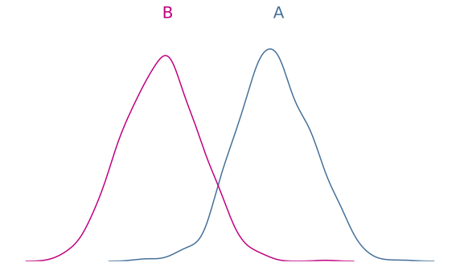Звичайно ж, порівнявши середні. Середні дуже віддалені, але нам би хотілося бути впевненими в тому, що ми не спостерігаємо випадковість, а бачимо закономірність
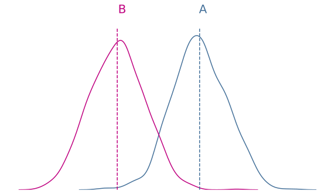а цьому може заважати велика дисперсія у розподілів метрики
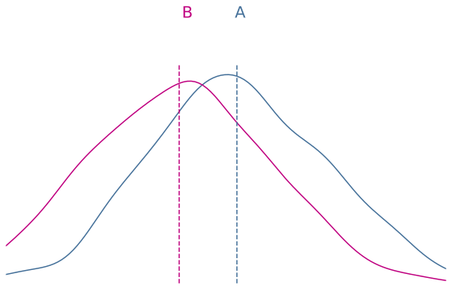Середні значення залишились без змін, але дисперсія зросла
або відсутність різниці між вибірками
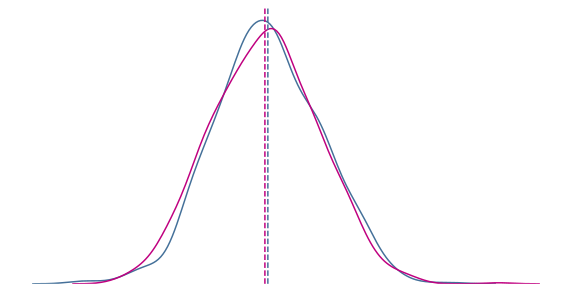буває так, що дисперсія в одного розподілу більша, ніж в іншого (напр., через дисбаланс вибірок)
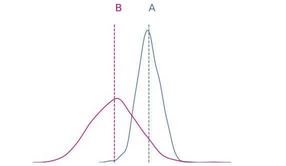Щоб порівняти дві вибірки, нам достатньо розрахувати \(t\)-значення:
\[ \frac{\text{Сигнал}}{\text{Шум}} = \frac{\text{Різниця середніх}}{\text{Дисперсія груп}} = \frac{\bar{X}_1 - \bar{X}_2}{\sqrt{\frac{S_1^2}{n_1} + \frac{S_2^2}{n_2}}} \]
\[\frac{\text{Різниця середніх} \nearrow }{\text{Дисперсія груп} \searrow }\]
Якщо експеримент спрямований на зміну зручності, то різницю буде видно в поведінкових метриках (напр., час проходження сценарію). У грошах різницю ми помітимо не відразу (якщо взагалі вона є)
Шум залежить від: розміру вибірки, сезонності, відсутності репрезентативності в групах, хаотичної поведінки певних підвибірок користувачів та інших зовнішніх чинників
Подивимося на дані та порахуємо
Форма без адреси
Середня тривалість дзвінка = 124 сек.
n = 30
Форма з адресою
Середня тривалість дзвінка = 110 сек.
n = 30
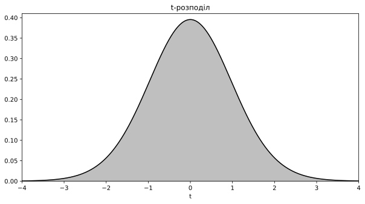
Подивимося на дані та порахуємо
Форма без адреси
Середня тривалість дзвінка = 124 сек.
n = 30
Форма з адресою
Середня тривалість дзвінка = 110 сек.
n = 30
Підсумок
Різниця \((\bar{x}_1 - \bar{x}_2) = 14\) сек.
Стандартна похибка (\(SE\)) = 27.0
\(t\)-значення = 2.01
\(p\)-значення = 0.0491
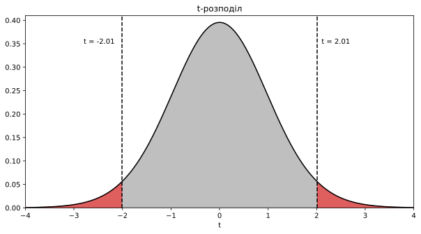
Спостерігати такі або більш екстремальні значення за умови вірності \(H_0\) = 0.0491. За рівня значущості \(\alpha < 0.05\), ми відхиляємо нульову гіпотезу і приймаємо альтернативну
Ми отримали \(p\)-значення = 0.0491. На рівні \(\alpha < 0.05\) ми відкидаємо нульову гіпотезу, а на \(\alpha < 0.01\) вже ні.
Тоді як бути?
Немає універсальних порогових значень
flowchart TB C["`1000 A/B тестів без змін`"] C -->|"`1-α Рівень значущості = 0.95`"| D["`950 тестів не пішли в прод`"] C -->|"`α Помилка I роду = 0.05`"| E["`50 тестів помилково пішли в прод`"]
\(t\)-критерій — ціле сімейство статистичних методів з перевірки гіпотез:
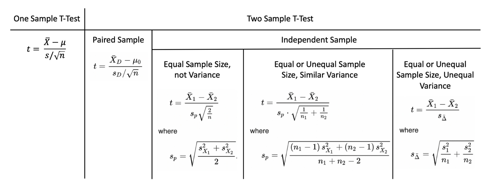— тут перераховані далеко не всі варіації \(t\)-критерію. Крім цього, існує ще проблема відсутності можливості точно порівняти середні значення у вибірках, дисперсії яких невідомі.
Ця проблема названа проблемою Беренса-Фішера.
Для цього використовують наближення Велча і то не у всіх випадках…

У цьому допоможе критерій часток
Критерії часток — це критерії, які працюють із розподілами Бернуллі.
Вони приймають на вхід вибірки з нулів і одиниць і перевіряють гіпотези про параметри \(p\) цих розподілів (ймовірність появи одиниці у вибірці).
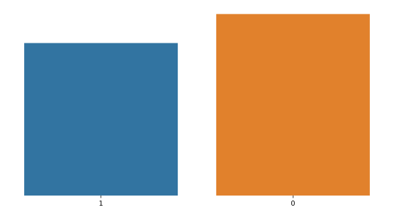Бернуллі зручно, оскільки, на відміну від нормального розподілу, не потрібно застосовувати жодних критеріїв, щоб дізнатися, чи взята вибірка з конкретного розподілу.
Подивимося на таблицю з результатами і порівняємо їх. Здається, що тестова група (\(\hat{p}_2\)) ефективніша, ніж контрольна (\(\hat{p}_1\)). Але нам необхідно це перевірити. Будемо використовувати \(z\)-тест для перевірки пропорцій.
| Група | Побачили форму | Відправили форму | Конверсія |
|---|---|---|---|
| Тестова | 2100 | 156 | 0.0742 |
| Контрольна | 2100 | 129 | 0.0614 |
Якщо \(\hat{p}_2 - \hat{p}_1 = 0\), тоді різниці між конверсіями немає. Ми порахуємо для цієї різниці ДІ (за допомогою стандартної помилки), щоб дізнатися, чи спостерігаємо ми випадковість, чи все ж таки закономірність
| Група | Побачили форму | Відправили форму | Конверсія |
|---|---|---|---|
| Тестова | 2100 | 156 | 0.0742 |
| Контрольна | 2100 | 129 | 0.0614 |
\(\hat{p}_2 - \hat{p}_1 \pm 1.96 \times \sqrt{\hat{p}_2(1 - \hat{p}_2) / n_2 + \hat{p}_1(1 - \hat{p}_1) / n_1}\)
\(\hat{p}_1\) та \(\hat{p}_2\) — це конверсії в результатах тестування
\(n_1\) та \(n_2\) — розмір вибірок
Формула розрахунку дисперсії для розподілу Бернуллі
\[p \times (1 - p)\]
| Група | Побачили форму | Відправили форму | Конверсія |
|---|---|---|---|
| Тестова | 2100 | 156 | 0.0742 |
| Контрольна | 2100 | 129 | 0.0614 |
\(0.0742 - 0.0614 \pm 1.96 \times \sqrt{0.0742 \times (1 - 0.0742) / 2100 + 0.0614 \times (1 - 0.0614) / 2100} = \\ = [-0.002350384; 0.02806466]\)
Бачимо, що різниця потрапляє в нуль. Це означає, що ми не можемо відкинути нульову гіпотезу на рівні 95%. Зазвичай у такі моменти чекають довше для досягнення необхідної потужності. Тому як тут, потужність досить низька (<80%), а це означає, що вірити цим результатам ми не можемо
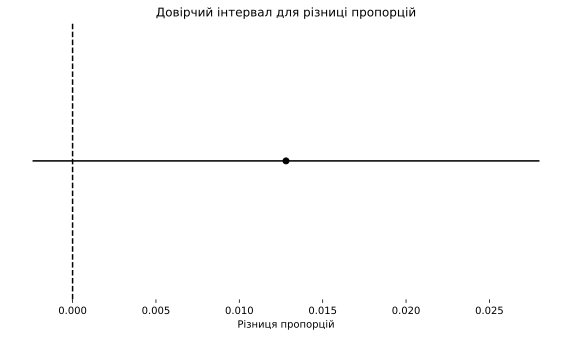
Непараметричні критерії
На відміну від параметричних критеріїв, у непараметричних розподіл даних невідомий.
Під час використання цих критеріїв часто дії проводять не з самими значеннями у вибірці та параметрами розподілу, а з їхніми рангами
Артуру доводиться несолодко, тому що Святославу несамовито запускає тести один за одним.
Тепер йому потрібно порівняти середні чеки між двома алгоритмами рекомендаційної системи в тій самій піцерії!
Щоб вирішити завдання, нам допоможе непараметричний \(U\)-критерій Манна-Вітні
Розподіли явно відрізняються від нормального
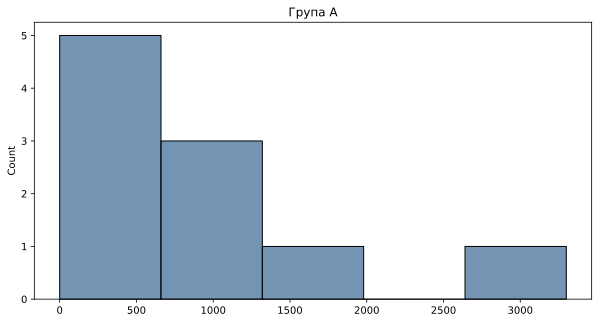
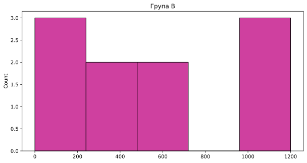
Статистики придумали хитре рішення таких завдань.
Суть полягає в тому, що ми перетворимо всі значення в їхні послідовні ранги. Нижче таблиця для двох груп
| 0 | 1 | 2 | 3 | 4 | 5 | 6 | 7 | 8 | 9 | |
|---|---|---|---|---|---|---|---|---|---|---|
| A | 0 | 100 | 0 | 700 | 3300 | 1100 | 700 | 500 | 400 | 1400 |
| B | 0 | 300 | 1000 | 0 | 200 | 500 | 500 | 1200 | 400 | 1200 |
- Об’єднаємо всі значення в довгу таблицю і сортуємо її
| Група | A | A | B | B | A | B | B | B | A | A | B | B | A | A | B | A | B | B | A | A |
| Чек | 0 | 0 | 0 | 0 | 100 | 200 | 300 | 400 | 400 | 500 | 500 | 500 | 700 | 700 | 1000 | 1100 | 1200 | 1200 | 1400 | 3300 |
- Присвоїмо кожному значенню свій ранг. Спочатку, нехай це буде порядковий номер
| Група | A | A | B | B | A | B | B | B | A | A | B | B | A | A | B | A | B | B | A | A |
| Чек | 0 | 0 | 0 | 0 | 100 | 200 | 300 | 400 | 400 | 500 | 500 | 500 | 700 | 700 | 1000 | 1100 | 1200 | 1200 | 1400 | 3300 |
| Ранг | 1 | 2 | 3 | 4 | 5 | 6 | 7 | 8 | 9 | 10 | 11 | 12 | 13 | 14 | 15 | 16 | 17 | 18 | 19 | 20 |
- Але можна помітити, що деякі значення повторюються, маючи при цьому різні ранги. Дуже важливо це виправити, взявши середнє між рангами для повторюваних значень.
| Група | A | A | B | B | A | B | B | B | A | A | B | B | A | A | B | A | B | B | A | A |
| Чек | 0 | 0 | 0 | 0 | 100 | 200 | 300 | 400 | 400 | 500 | 500 | 500 | 700 | 700 | 1000 | 1100 | 1200 | 1200 | 1400 | 3300 |
| Ранг | 2.5 | 2.5 | 2.5 | 2.5 | 5.0 | 6.0 | 7.0 | 8.5 | 8.5 | 11.0 | 11.0 | 11.0 | 13.5 | 13.5 | 15.0 | 16.0 | 17.5 | 17.5 | 19.0 | 20.0 |
| Група | Чек | Ранг |
| A | 0 | 2.5 |
| A | 0 | 2.5 |
| B | 0 | 2.5 |
| B | 0 | 2.5 |
| A | 100 | 5.0 |
| B | 200 | 6.0 |
| B | 300 | 7.0 |
| B | 400 | 8.5 |
| A | 400 | 8.5 |
| A | 500 | 11.0 |
| B | 500 | 11.0 |
| B | 500 | 11.0 |
| A | 700 | 13.5 |
| A | 700 | 13.5 |
| B | 1000 | 15.0 |
| A | 1100 | 16.0 |
| B | 1200 | 17.5 |
| B | 1200 | 17.5 |
| A | 1400 | 19.0 |
| A | 3300 | 20.0 |
- Тепер ми можемо порахувати \(U\)-статистику
\[U_1 = n_1 \times n_2 + \frac{n_1 \times (n_1 + 1)}{2} - R_1 \\ U_2 = n_1 \times n_2 + \frac{n_2 \times (n_2 + 1)}{2} - R_2\]
де \(R_1\) та \(R_2\) — суми рангів для груп 1 та 2 відповідно
У нашому випадку \(U_1\) = 56.5 та \(U_2\) = 43.5
- Шукаємо в таблиці критичних значень (old school) відповідне нашому і бачимо Uкритичне = 23.
Якщо \(U\)критичне > \(U\) статистики, то ми відхиляємо нульову гіпотезу про рівність розподілів
Або можемо використати функцію mannwhitneyu() з бібліотеки scipy і одразу отримати \(p\)-значення
Зверніть увагу, що нульова гіпотеза у Манна-Уїтні не порівнює середні за допомогою суми рангів, а говорить про те, що вибірки взяті з одного і того ж розподілу
Головна умова застосовності Манн-Вітні — схожість форм розподілів
Для інших порівнянь існує низка непараметричних критеріїв:
- Критерій Краскелла-Волліса (від 2-х груп і більше)
- Критерій Данна
Блок схема вибору метода тестування
flowchart TD
A[Тип даних] -->|Неперервні|B[Тип питання?]
A -->|Дискретні|C[Хі-квадрат]
B --> |Взаємозвязок| D[Чи є незалежна змінна?]
B --> |Різниця| E[Різниця між чим?]
D --> |Так| F[Регресійний аналіз]
D --> |Ні| G[Кореляційний аналіз]
G --> |Параметричний| T[Кореляція Пірсона]
G --> |Непараметричний| U[Кореляція Спірмена]
E --> |Тест однаковості дисперсії| H[F тест,<br/> Тест Брауна-Форсайта,<br/> Тест Бартлетта]
E --> |Середніх| I[Скільки груп?]
I --> |2| J[Параметричні умови виконуються?]
I --> |> 2| K[Параметричні умови виконуються?]
J --> |Так| L[t-тест для незалежних вибірок,<br/> t-тест для залежних вибірок]
J --> |Ні| M[Трансформація даних працює?]
M --> |Так| L
M --> |Ні| N[Манна-Уїтні,<br/> Вілкоксон]
K --> |Так| O[ANOVA]
K --> |Ні| P[Трансформація даних працює?]
P --> |Так| O
P --> |Ні| Q[Критерій Краскела-Уолліса]
O --> R[Пост-аналіз: <br/>Тест Тьюкі, <br/>Бонферроні]
Q --> S[Пост-аналіз: <br/>Тест Данна]
style noteA opacity:0
style noteA color:#0000
subgraph noteA ["`**Параметричні умови:**<br/>1. Нормальність<br/>2. Рівність дисперсій<br/>3. Незалежні, незміщенні вибірки`"]
end
Приклади
Z-test для порівняння середніх двох вибірок T-test для оцінки різниці середніх у двох вибірках Z-test для пропорцій Тест Колмогорова-Смирнова Перевірка нормальності розподілу тестом Шапіро-Вілка Порівняння КС та ШВ Перевірка рівності дисперсій тестом Бартлетта Перевірка рівності дисперсій тестом Левена Критерій Вілкоксона-Манна-Вітні
Способи визначення обсягу вибірки для A/B-тестів. Потужність експерименту
Як ви думаєте, якщо за рік провести 1000 A/B-тестів, скільки з них будуть з помилковими результатами?
Як ви думаєте, якщо за рік провести 1000 A/B-тестів, скільки з них будуть з помилковими результатами?
\(\leq \alpha\) та \(\leq 1 - \beta\)
Ми виділяємо 2 способи визначення необхідного часу на експеримент:
Fixed Horizon
Проста реалізація
Висока помилка раннього зупинення
- Фіксований часовий горизонт проведення експерименту
- Один раз розрахували, один раз підгледіли й ухвалили рішення
Sequential testing
Оптимізація «проблеми погдлядування»
Складніша реалізація
- Межі зупинки експерименту розраховуються real-time
- Значущість накопичувально розраховується за додатковими порогами прийняття рішення
Fixed Horizon
Етапи
flowchart LR
A[Розрахунок N] --> B[Збір N]
B --> C{p-значення < α?}
C --> |Так| D[Відкидаємо нульову гіпотезу]
C --> |Ні| E[Не відкидаємо нульову гіпотезу]
Примітка
\(N\) розраховується згідно з параметрами TP (потужність), TN (рівень значущості), MDE (мінімальний очікуваний ефект)
Фактори, що впливають на час
flowchart LR
A["`Фактори, що впливають на
чутливість
експементу`"] --> B[Статистичні]
A --> C[Продуктові]
B --> D[Розмір вибірки]
B --> E[Дисперсія]
D --> F[Розмір ефекту]
D --> G["`Помилка I роду`"]
D --> H["`Помилка II роду`"]
C --> I[Сезонність]
C --> J[Метрика]
I --> K[Щотижнева]
I --> L[Щомісячна]
I --> M["`...`"]
J --> N[Типізація]
J --> O[Вікно закриття]
N --> P[Ratio]
N --> Q[Continuous]
N --> R[Proportion]
Чутливість
Здатність побачити значущі відмінності в метриці там, де вони насправді мають бути, називається чутливістю
Висока чутливість метрики дає змогу:
- бачити досить маленькі зміни
- або залучати меншу кількість користувачів
Чутливість залежна від метрики користувацьких циклів
Чутливість експерименту залежна від набору метрик і галузі, в якій ці метрики оцінюються:
- Клік по банеру чутливіший, ніж факт купівлі в інтернет-магазині
- С1 чутливіший, ніж С2, С3 Cn
- Транзакційна активність у free-to-play іграх чутливіша, ніж у travel галузі
Потужність та помилка II роду
Потужність для продуктових реалій є важливим параметром, тому що нікому не хотілося б викидати експерименти з реальними ефектами.
Приклад
Припустимо, ми беремо рівень потужності у 80% як мінімальний допустимий поріг для експериментів, то з 1000 експериментів з реальним приростом у метрику, у 800 ми були б упевнені, що приріст є. Залишаються 200, які будуть викинуті в смітник даремно, тому що залишається False Negative (помилка II) = 0.2.
flowchart TB
A["`1000 A/B-тестів
з потивиними
результатами`"] --> |"`β
Потужність = 0.8`"| B["`800 тестів
пішли в прод`"]
A --> |"`1 - β
Помилка II роду = 0.2`"| C["`200 тестів
помилково
не пішли в прод`"]
Потужність та помилка II роду
Виходить, що…
Потужність потрібно максимізувати на стільки, на скільки дозволяють можливості продукту. Насамперед це залежить від MAU і, загалом, від трафіку.
Висновок
Що вищий рівень потужності, то менше хороших експериментів буде помилково забуто
Рівень значущості та помилка I роду
Коли ухвалюють рішення про результати експерименту, вважають, що насамперед потрібно дивитися на \(p\)-value (помилка I роду або false positive): позитивна зміна, негативна зміна або відсутність зміни
Приклад
Припустімо, ми беремо рівень значущості в 95% як мінімальний допустимий поріг для експериментів, то з 1000 безуспішних експериментів (немає ефекту) у 950 ми були б упевнені, що ефекту реально немає. Але 50 помилкових викатили б у продакшен, хоча в цьому немає жодного сенсу, тому що в них ми спостерігаємо випадковість, а не реальну закономірність.
flowchart TB
A["`1000 A/B-тестів
без результатів`"] --> |"`1-α
Рівень значущості = 0.95`"| B["`950 тестів
не пішли в прод`"]
A --> |"`α = 0.95
Помилка I роду = 0.05`"| C["`50 тестів
помилково
пішли в прод`"]
Рівень значущості та помилка I роду
Виходить, що…
Так само як і потужність, рівень значущості необхідно збільшувати в міру можливостей. Класичні 95% відірвані від сучасних реалій з бігдатами та вимог бізнесу до точності. Отже, 5% здаються недозволеною помилкою для великих компаній.
Висновок
Що вищий рівень значущості, то менше непотрібних експериментів будуть викочуватися в продакшн.
flowchart TB
A["`1000 A/B-тестів`"] --> |"`30% тестів мають
дати ефект        30%`"| B["`Є ефект
у 300`"]
A --> |"`70%`"| C["`Не має ефекту
у 700`"]
B --> |"`power = 35%      35%`"| D["`105 тестів
виявили
ефект (TP)`"]
B --> |"`65%`"| E["`195 тестів
не виявили
ефект (FN)`"]
C --> |"`95%`"| F["`665 тестів не
значущі (TN)`"]
C --> |"`5%         α = 5%`"| G["`35 тестів
є значущими (FP)`"]
subgraph ide1 [p < α                        ]
D
end
subgraph ide2 [p < α                        ]
G
end
style ide1 fill:#fff,stroke:#333,stroke-width:2px
style ide2 fill:#fff,stroke:#333,stroke-width:2px
Мінімальний очікуваний ефект (MDE)
Що таке MDE?
Зміни, які ми хотіли б побачити із заданими порогами помилок I і II типів, розраховуються за допомогою мінімального очікуваного ефекту (minimum detectable effect або MDE).
Для цього параметра не вистачить короткого опису. Розберемо основні питання далі
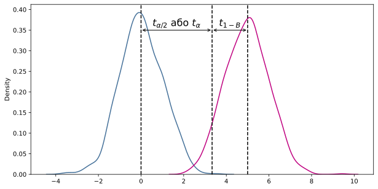
One-tail multiplier = \(t_{\alpha} + t_{1-B}\)
Two-tail multiplier = \(t_{\alpha/2} + t_{1-B}\)
MDE, Lift, ES
Почнемо з того, що люди часто плутають MDE і Lift (або Uplift).
Типово, в обговореннях мають на увазі одне й те саме, коли говорять про ефект, приріст, значущий приріст та інші подібні. Але насправді це не так. У цих визначеннях семантика відіграє важливу роль, коли заходить мова про оцінку результатів A/B.
(вигаданий діалог)
Ну що? Виросла метрика?
Варіанти як відповісти:
1. Lift
2. MDE
3. Effect Size
Lift
Lift = \(\frac{\bar{Y}_t - \bar{Y}_c}{\bar{Y}_c}\), де \(\bar{Y}_t, \; \bar{Y}_c\) — метрики тесту і контролю відповідно
Наприклад, RPV (revenue per visit) у контролі 118, у тесті 121. Тоді Lift = (121-118)/118 = 0.0254 = 2.54%.
Lift — це відмінність метрики тесту від метрики контролю. Рахуємо їхню різницю і ділимо на контроль. Множимо на 100 і отримуємо %-ву зміну.
Ми за фактом на даних експерименту розраховуємо приріст і говоримо яка у метрик відносна різниця. Тут поки що ні про які помилки I і II типів не йдеться. Це звичайний проксі параметр для квазі-оцінки експерименту.
Effect Size
Effect Size = \(\frac{\bar{Y}_t - \bar{Y}_c}{\sigma}\), де \(\sigma = \frac{\sigma_t - \sigma_c}{2}\)
Наприклад, RPV у контролі 118, у тесті 121, сигма 2. Тоді Effect size = (121-118)/2 = 1.5 Effect size рахується по різному для різних типів метрик, але суть залишається (вище показано формулу для Cohen’s d)
Що більше отримане число, то сильніший розмір ефекту. Це справедливо, якщо дисперсія стійка і майже не змінюється.
Effect size вимірює ступінь відхилення спостережуваних значень від тих, які можна було б очікувати за відсутності ефекту. Тобто рахуючи різницю до дисперсії, можна зрозуміти, наскільки сильно відхилився отриманий ефект від ефекту, який дорівнює нулю.
Концепція MDE
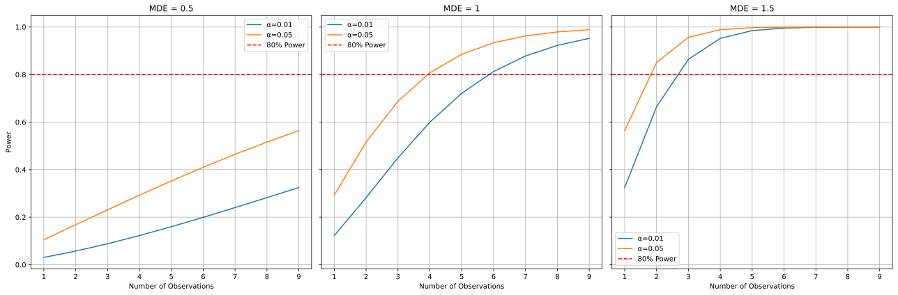Рисунок 1: Графіку розрахунку MDE
MDE
Мінімальний очікуваний ефект — це найменший істинний ефект отриманий від змін, який з упевненістю зможе виявити статистичний критерій.
Більш формально: це найменший істинний ефект, отриманий від змін, який має певний рівень статистичної потужності для певного рівня статистичної значущості, враховуючи конкретний статистичний тест.
MDE
Мінімальний очікуваний ефект — це найменший істинний ефект отриманий від змін, який з упевненістю зможе виявити статистичний критерій.
Більш формально: це найменший істинний ефект, отриманий від змін, який має певний рівень статистичної потужності для певного рівня статистичної значущості, враховуючи конкретний статистичний тест.
…істинний ефект… — тут мається на увазі, що якщо значущої зміни за n = 10000 у такого ефекту немає (наприклад, 2%), то досить упевнено можна сказати лише те, що можливий істинний ефект не більший, ніж MDE. Якщо вибірка була б більшою, скажімо n = 20000, то, можливо, ефект ми б і побачили, але точно менший (тобто <2%).
MDE
Мінімальний очікуваний ефект — це найменший істинний ефект отриманий від змін, який з упевненістю зможе виявити статистичний критерій.
Більш формально: це найменший істинний ефект, отриманий від змін, який має певний рівень статистичної потужності для певного рівня статистичної значущості, враховуючи конкретний статистичний тест.
…певний рівень статистичної потужності для певного рівня статистичної значущості… — у розрахунках MDE беруть участь \(\alpha\), \(\beta\) та розмір вибірки. Виходячи із заданих рівнів потужності та значущості, MDE буде варіюватися за одного й того самого обсягу вибірки. Це можна зрозуміти на Графіку розрахунку MDE 1: що нижчі альфа і бета, то більше знадобиться користувачів для одного і того ж MDE
MDE
Мінімальний очікуваний ефект — це найменший істинний ефект отриманий від змін, який з упевненістю зможе виявити статистичний критерій.
Більш формально: це найменший істинний ефект, отриманий від змін, який має певний рівень статистичної потужності для певного рівня статистичної значущості, враховуючи конкретний статистичний тест.
…статистичний тест — у формулі розрахунку MDE враховується розподіл, з якого взято метрику. MDE по різному розраховується для \(t\)-критерію, \(\chi^2\) та інших статичних критеріїв
Як рахувати MDE?
Minimum Detectable Effect = \(M \frac{S}{\bar{Y}_c}\), де \(M = t_{\alpha/2}\), \(S = \sqrt{\frac{\sigma_t^2 + \sigma_c^2}{2}}\)
У \(M\) рахуємо \(t\)-значення для параметрів \(\alpha\) та \(\beta\). Для двосторонньої перевірки \(\alpha\) ділимо на 2. Далі коли отримаємо MDE, ми будемо впевнені в результатах, відповідно до обраних порогів значущості та потужності.
Якщо нас цікавить рівень значущості 99%, то відповідно беремо 0.01 і отримуємо \(t{\alpha/2 = 2.58}\).
Розрахунок для \(\beta\): для 80% потужності. Тоді \(M = 2.58 + 0.842 = 3.422\)
Далі множимо на стандартну похибку й отримуємо MDE! Відношення до середнього по контролю \(\bar{Y}_c\) тут для отримання відсотка.
Що менший MDE ми хотіли б отримати, то більше спостережень знадобиться для його виявлення
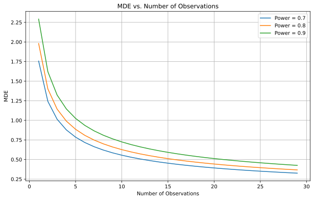Як приймати рішення на основі MDE?
Якщо \(p\)-value вище рівня \(\alpha\), то це не означає відсутність ефекту. Ефект може і є, але він точно не більший, ніж MDE для \(\alpha\), \(\beta\) і дисперсії.
Наприклад, ви спостерігаєте 14-й день експерименту, MDE на рівні 1%, \(p\)-value вище рівня \(\alpha\). Це означає, що якщо ви продовжите експеримент і побачите значущі результати експерименту, то тільки для ефекту, що \(\leq\) 1%.
Приймати рішення продовжувати експеримент чи ні, можна беручи до уваги MDE.
Симуляція A/B-тесту
CR A: 0.25, CR B: 0.2875, Power = 0.8, \(\alpha\) = 0.05
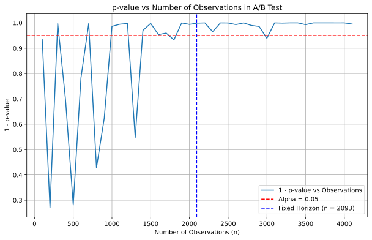Симуляція A/B-тесту
CR A: 0.25, CR B: 0.26, Power = 0.8, \(\alpha\) = 0.05
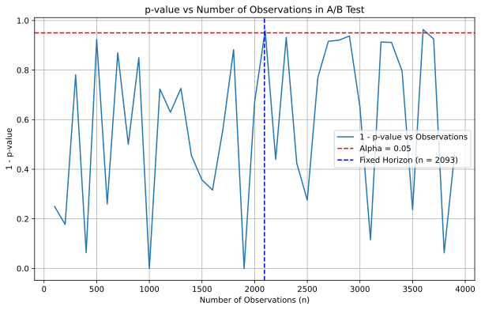Дякую за увагу!